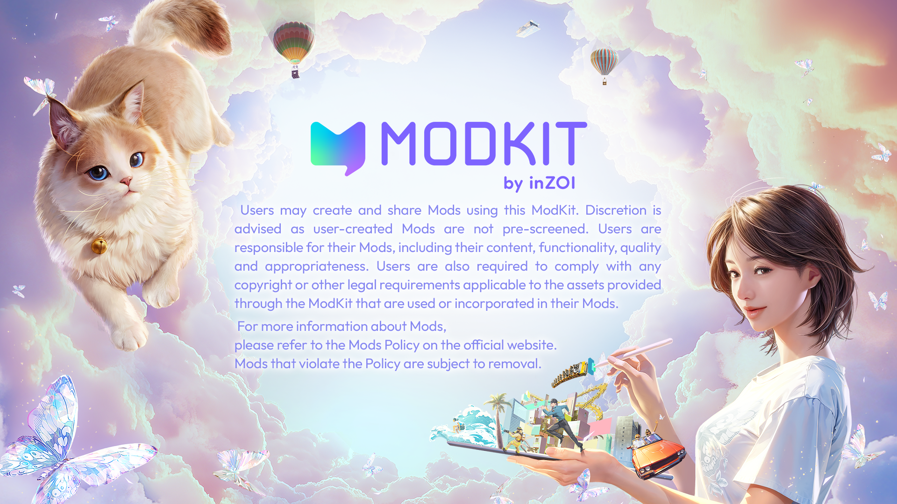

Home¶
inZOI ModKit is a creative tool that allows users to recreate the vibrant world of inZOI through their own imagination.
Build your own spaces, characters, and stories, bring them into the game, and share your experiences with other players.
This guide is your first step on that journey.

What would you like to do?¶
Create Mods¶
- inZOI Editor Interface Guide (Editor)
- Create a Zoi (CAZ)
- Create furniture and objects (Build)
- Edit game data (DataAsset)
Use Tools¶
Resource¶
- Browse included assets Character
- Browse included assets Build
- Analyze sample mods
- Watch tutorial videos
DCC Tools¶
Game Data Reference¶

© 2025 inZOI Studio, Inc. All rights reserved.